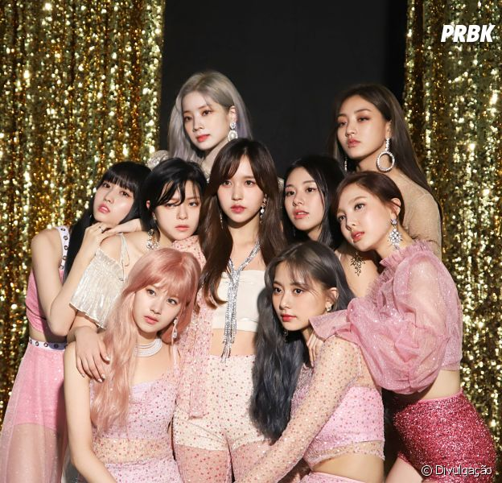

TWICE THE BEST
Twice é um grupo feminino sul-coreano formado pela JYP Entertainment em 2015. O grupo é composto de nove integrantes: Nayeon, Jeongyeon, Momo, Sana, Jihyo, Mina, Dahyun, Chaeyoung e Tzuyu. Twice foi formado no reality show Sixteen e estreou em 20 de outubro de 2015, com o extended play The Story Begins.

Integrantes do grupo
- Nayeon
- Jeongyon
- Momo
- Sana
- Jihyo
- Mina
Dahyun
- Chaeyong
- Tzuyu